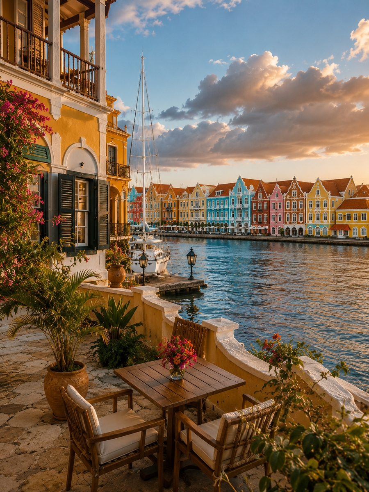
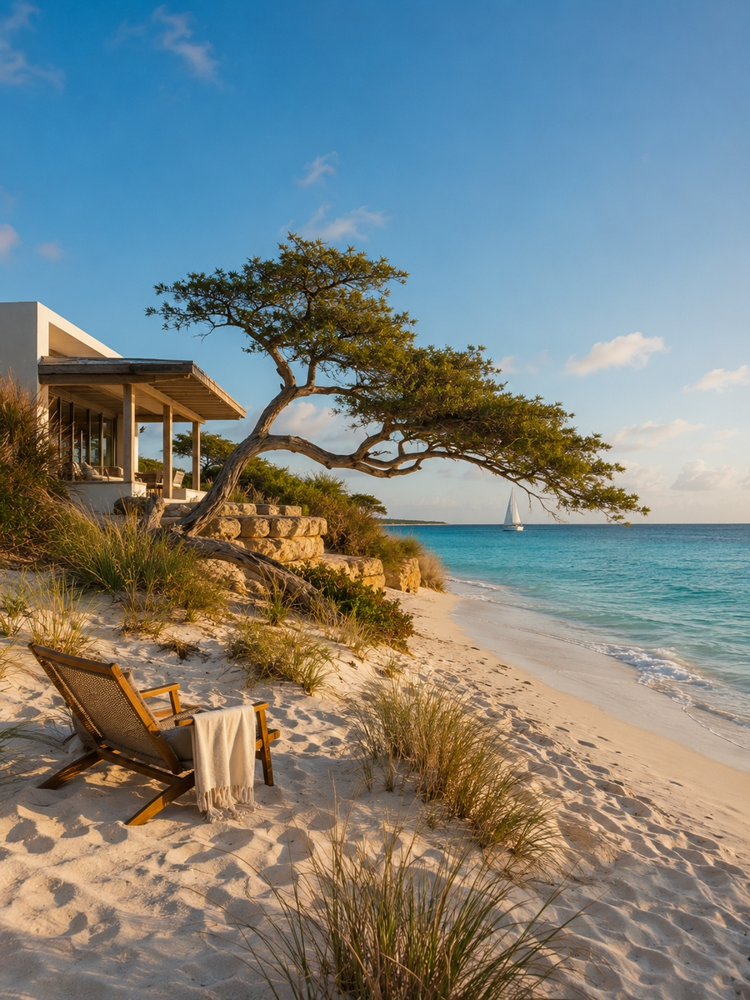
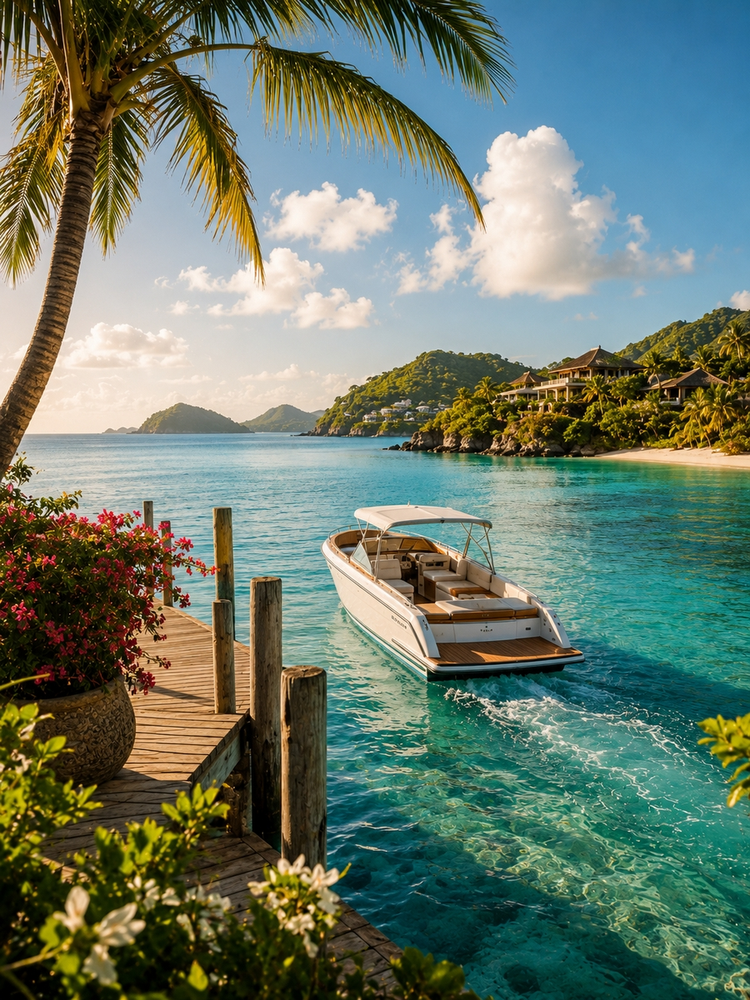
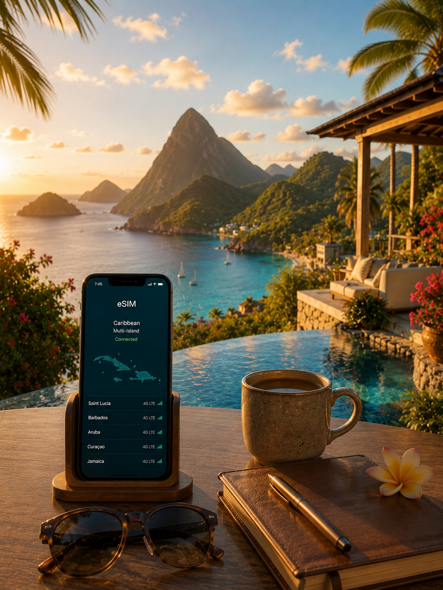

Плануйте поїздку на Кариби впевнено. Порівняйте Домініканську Республіку, Jamaica, Aruba, Bahamas та інші приголомшливі острови, а потім скористайтеся нашими гайдами по готелях, авіарейсах, eSIM, бюджету та переміщеннях, щоб спланувати кожен крок.
Від редакції: цей хаб веде на основні матеріали Travel Radar LK. Деякі сторінки містять чітко позначені партнерські посилання.
Послідовність має значення. Спочатку зафіксуйте напрямок і готель — потім вибудовуйте решту послуг навколо цього рішення.


Домініканська Республіка та Jamaica пропонують нескінченні all-inclusive курорти з прямим доступом до пляжу. Aruba та Curaçao вражають унікальними пустельними пейзажами та яскравою голландською архітектурою. Saint Lucia та Antigua міняють зручність мега-курортів на мальовничі вулканічні краєвиди, камерні бутик-готелі та незрівнянну романтику.
Спочатку виберіть атмосферу острова, потім шукайте готелі з фільтром за цією естетикою. Не приймайте рішення відштовхуючись лише від однієї фотографії.

На невеликих островах, таких як Barbados або Turks and Caicos, ваш курорт може знаходитися в 15 хвилинах їзди від аеропорту. На великих островах, таких як Puerto Rico або Jamaica, дорога до вашого узбережжя може зайняти понад 90 хвилин. Довгий трансфер у день прибуття після трансатлантичного рейсу суттєво змінює враження від поїздки.
Бронюйте трансфер після підтвердження готелю — не раніше. Деякі розкішні курорти включають трансфер на човні або вертольоті.

Регіональна карибська eSIM означає, що карти, броні готелів і додатки для транспорту будуть працювати з першої хвилини після приземлення в Nassau, San Juan або Bridgetown. Ніяких черг за SIM-картами в аеропорту.
Регіональні eSIM для Карибів часто охоплюють відразу кілька островів, що ідеально підходить для пасажирів круїзів і мандрівників між островами.
Приватні клініки на карибських островах дорогі, а важкі випадки часто вимагають медичної евакуації на материкову частину США. Надійний поліс із медичним покриттям від $100 000 та евакуацією — це спокійна база. Якщо ви плануєте ходити під вітрилом, займатися дайвінгом або кайтсерфінгом, переконайтеся, що ці конкретні активності покриваються страховкою.
Зберігайте номер поліса та телефон екстреної допомоги офлайн — не лише в електронній пошті.
Купання зі свинями на Bahamas, дослідження Пітонів на Saint Lucia або дайвінг на рифі в Grand Cayman швидко розпродуються у високий сезон. Перевіряйте розклад круїзних лайнерів до бронювання: популярні місця переповнені, коли в порту стоять кілька мега-лайнерів.
Вибирайте за розміром групи, точкою відправлення та еко-сертифікатами — а не лише за фотографією чи ціною.
Великі хаби, такі як San Juan (SJU) та Punta Cana (PUJ), пропонують прямі рейси з усього світу, тоді як до прихованих перлин, таких як Grenada або Saint Vincent, часто потрібні регіональні пересадки. Ціни на рейси сильно залежать від дати та острова — гнучкість може заощадити сотні доларів.
Довгі стиковки в Miami або Panama можуть зробити дешевий квиток набагато дорожчим. Перевіряйте загальний час у дорозі, а не лише тариф.